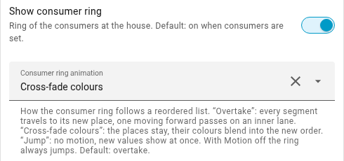
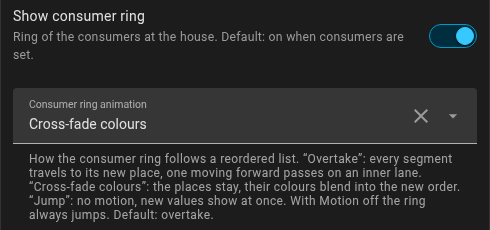
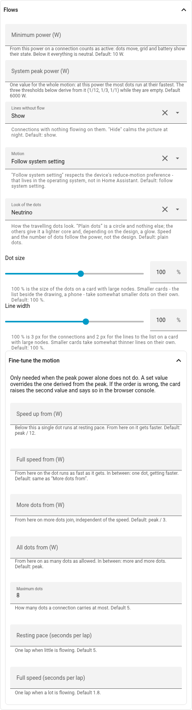
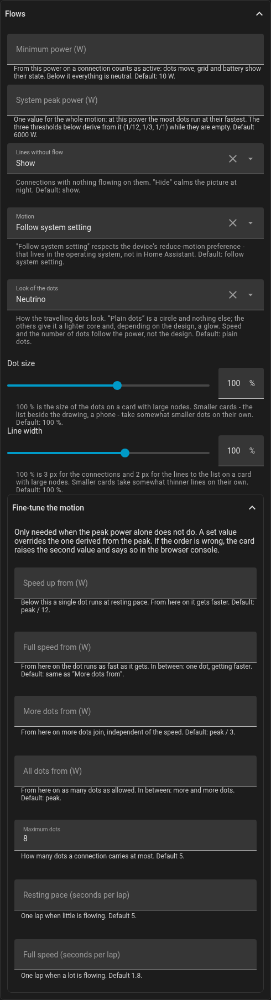

Animations
The card moves two things: the consumer ring when the order of the consumers
changes, and the dots on the lines that show the flow. Both can be set. Under
Flows → Motion, off stops every movement; the default auto follows the
device’s "reduce motion" setting.
The ring
The list sorts itself by power on a fixed beat, and the ring follows it. There are three ways it can do that:
- Overtake (default): every segment travels to its new place. One that moves forward dives to an inner lane, passes underneath the others and surfaces at its place.
- Cross-fade colours: the places stay where they are, their colours blend into the new order. Calmer, above all when the order changes often.
- Jump: no movement, the ring stands in the new order at once.
Try it: in this card four consumers swing around the same mean, so their order changes every few seconds. List and quick buttons are hidden, so that only the ring is to be seen.
In the editor the choice is under Display → Consumer ring animation:

The PV ring of several sources follows the same setting.
The dots
The dots show where power flows. Their speed and number depend on the power: below the minimum power (default 10 W) none runs, above it one slow dot first; with more power it gets faster, then more join, until top speed and the maximum dots are reached. Where that is, one value says: the peak power of the plant (default 6000 W); for more control the single thresholds are under Fine-tune the motion.
What a dot looks like is its design: Plain dots (default) are a circle with nothing else, the others give it a bright core and, depending on the design, a glow. The design changes only the look, never speed or number.
Try it: here all values stand still and nothing re-sorts - only the dots move. The switches choose the design, the sliders the maximum number of dots (the card takes 2 to 10, default 5), the dot size (40 to 150 %, default 100) and the speed: seconds a run at the lower and at the upper threshold, default 5 and 1.8.
In the editor: the group Flows. Maximum dots and speed are under Fine-tune the motion.


ring:
animation: fade # overtake | fade | jump
flow:
animation: auto # auto | on | off
design: neutrino
max_dots: 8
slow_s: 8 # seconds a run with little power
fast_s: 3 # ... with a lot of power